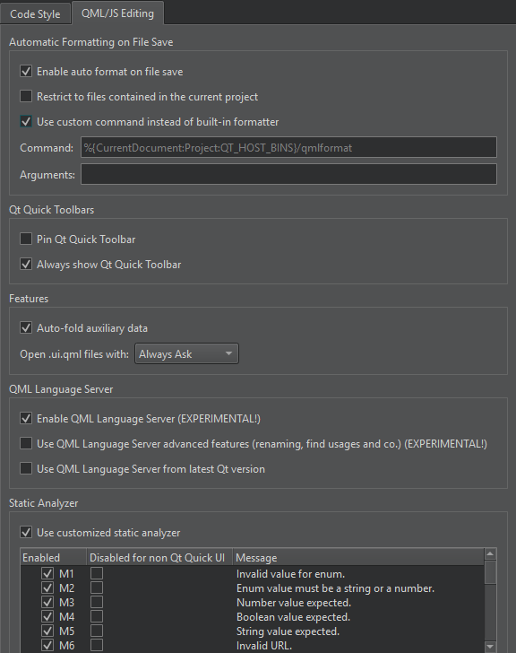

Turn on QML Language Server
Since Qt 6.4, the QML language server offers code completion and issues warnings for QML. To use it, go to Preferences > Qt Quick > QML/JS Editing and select Enable QML Language Server.
By default, enabling the QML language server will only enable warning messages and code completion, while advanced features such as renaming and finding usages will be handled by the embedded code model. To disable the embedded code model and use the QML language server for everything, select Use QML Language Server advanced features.
Also, Qt Creator tries to use the QML language server shipped with the Qt version in your current kit. To override that behavior and always use the QML language server of the highest registered Qt version, select Use QML Language Server from latest Qt version.

When using qmlls from Qt 6.7 or later, set QT_QML_GENERATE_QMLLS_INI to ON in Projects > Build Settings > Initial Configuration.
See also How To: Manage Language Servers, Enabling and Disabling Messages, CMake Build Configuration, and Language Servers.